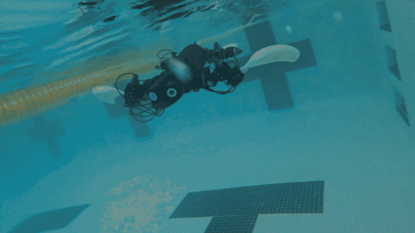
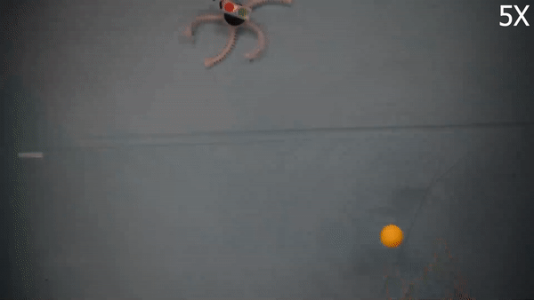
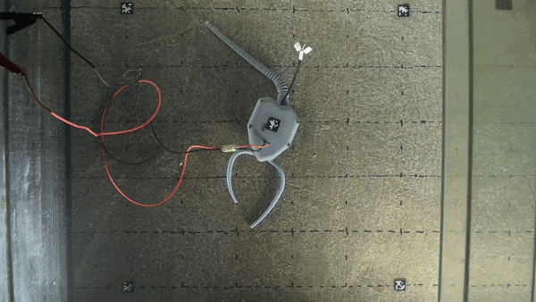

For the most up to date snapshot of output, check out google scholar.
Inspired by nature, are creating robots that leverage varying structural properties and materials.
We are thinking about how to control soft-rigid systems to ensure safety in unknown environments.

What it says on the tin - we build sea turtles for marine exploration.

Prior work on biomimetic soft robots designed to mimic important features of the brittle star, a suprisingly mobile echinoderm.

In collaboration with paleontologists, we study extinct animals by creating robots, allowing us to test hypotheses about behavior arising from physical constraints.